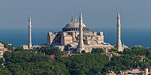
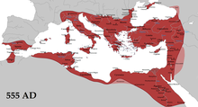

Byzantine period
After defeating Licinius (the senior co-emperor (augustus) of the East in Nicomedia) at the Battle of Chrysopolis (Üsküdar) in 324 (thus bringing an end to the Tetrarchy system and becoming the sole emperor), Constantine the Great chose the nearby city of Byzantium as the new capital of the Roman Empire and started rebuilding and expanding the city. In 330 he officially proclaimed it as the new Roman capital with the name New Rome (Nova Roma) but soon afterwards renamed it Constantinople (Constantinopolis, modern Istanbul). Under Constantine, Christianity did not become the official religion of the state, but Christianity enjoyed imperial preference since he supported it with generous privileges.
JustinianTheodosius the Great made Christianity the official state religion of the Roman Empire with the Edict of Thessalonica in 380. Following the death of Theodosius in 395 and the permanent division of the Roman Empire between his two sons, Constantinople became the capital of the Eastern Roman Empire. This empire, which would later be branded by historians as the Byzantine Empire, ruled most of the territory of present-day Turkey until the Late Middle Ages;[114] although the eastern regions remained firmly in Sasanian hands until the 7th century. The frequent Byzantine-Sassanid Wars, a continuation of the centuries-long Roman-Persian Wars, took place between the 4th and 7th centuries.
Several ecumenical councils of the early Church were held in cities located in present-day Turkey, including the First Council of Nicaea (Iznik) in 325 (which resulted in the first uniform Christian doctrine, called the Nicene Creed), the First Council of Constantinople in 381, the Council of Ephesus in 431, and the Council of Chalcedon in 451.[115] During most of its existence, the Byzantine Empire was one of the most powerful economic, cultural, and military forces in Europe.[116] Established in the Roman period, the Ecumenical Patriarchate of Constantinople is the oldest continuously active institution in Istanbul.[117]